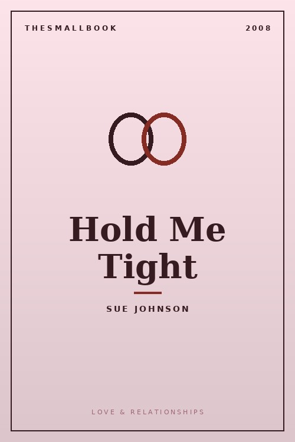

Why Did Ashley Madison and the 2015 Data Breach Fail?
The Secret That Was Never Secret
What happened
Ashley Madison, owned by Toronto's Avid Life Media, sold discreet affairs to married people under the promise that discretion was total. In July 2015 a group calling itself the Impact Team stole the company's entire database: names, emails, credit card transactions, sexual fantasies and internal emails for some 37 million accounts. When the company refused to shut down, the hackers published everything in August. The fallout included exposed public officials, at least two reported suicides linked to the shame, thousands of extortion attempts against users, the CEO's resignation within weeks, and lawsuits that ended in a settlement of about 11 million dollars in the United States and a regulatory penalty in Canada and Australia. The company's own marketing had charged users a fee for a full delete service that, the dumped data proved, had not deleted them. A business whose entire product was a secret discovered that it had been keeping the secret badly, briefly and for a price.
The fatal mistake
Three failures compounded. The security was theatre: investigations found weak practices for a company holding the most blackmailable data on earth, and executives ignored the obvious target painted on the brand. The delete fee was fraud-adjacent: charging nineteen dollars to erase accounts that stayed in the database converted a breach into a betrayal. And the response chose pride: refusing the hackers' demand was defensible, but having no honest plan for users once the data fell meant the company let extortionists write the customer communications. Underneath all three sat a business model that required total trust while budgeting for none of its costs.
The lesson
A secret is an engineering specification, not a marketing line. If your product is confidentiality, security is the product, and its budget is not overhead. Never charge for a promise the database contradicts; the dump will introduce your pricing page to your retention policy. Crisis honesty is cheaper prepaid: users forgive breaches faster than they forgive discovering the breach was worse than announced. Finally, shame is a security property. Data that can destroy lives by publication demands a higher standard than data that merely embarrasses a balance sheet.
The antidote book

Couples do not fight about money or chores. They fight about one question: are you there for me when I need you?
READ THE SUMMARY OPEN INTERACTIVE BOOKQuestions people ask about Ashley Madison and the 2015 Data Breach
Why did Ashley Madison and the 2015 Data Breach fail? Three failures compounded. The security was theatre: investigations found weak practices for a company holding the most blackmailable data on earth, and executives ignored the obvious target painted on the brand. The delete fee was fraud-adjacent: charging nineteen dollars to erase accounts that stayed in the database converted a breach into a betrayal. And the response chose pride: refusing the hackers' demand was defensible, but having no honest plan for users once the data fell meant the company let extortionists write the customer communications. Underneath all three sat a business model that required total trust while budgeting for none of its costs.
How much was lost? 37 million accounts dumped; lives and marriages destroyed
What is the lesson? A secret is an engineering specification, not a marketing line. If your product is confidentiality, security is the product, and its budget is not overhead. Never charge for a promise the database contradicts; the dump will introduce your pricing page to your retention policy. Crisis honesty is cheaper prepaid: users forgive breaches faster than they forgive discovering the breach was worse than announced. Finally, shame is a security property. Data that can destroy lives by publication demands a higher standard than data that merely embarrasses a balance sheet.
Ashley Madison and the 2015 Data Breach kyun fail hua? In simple English: Three failures compounded. The security was theatre: investigations found weak practices for a company holding the most blackmailable data on earth, and executives ignored the obvious target painted on the brand. The delete fee was fraud-adjacent: charging... The cost was 37 million accounts dumped; lives and marriages destroyed.
Keep digging
More trust and safety failures · Open the full Graveyard
Read the antidote book summary: Hold Me Tight
Related failures
- Why did The City of Troy fail? ~1180 BC · The Original Free Gift
- Why did Juul fail? 2022 · The $38B Vaping Empire That Vaporized to Zero
- Why did Jet Airways fail? 2019 · The Founder Who Couldn't Let Go
- Why did Cambridge Analytica fail? 2018 · Harvested 87 Million Friends of Friends
- Why did Grenfell Tower and the Cladding Economy fail? 2017 · The Tower Everyone Was Warned About
- Why did Wells Fargo fail? 2016 · 3.5 Million Fake Accounts, Opened by Its Own Staff
They paid full price. You get the lesson in simple English.